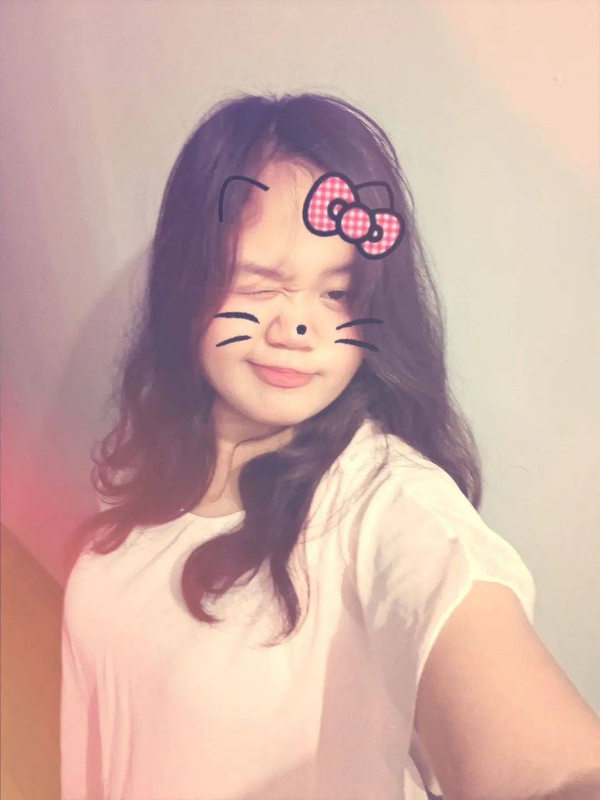

Certified night owl
What is "sleep" anyway?
A LITTLE INTRODUCTION
This is so me!
A nursing student, a certified night owl, and a soft-hearted girl with a little chaos in her personality. Welcome to my world.
GET TO KNOW ME ↘01 / THE GIRL BEHIND THE SCREEN
"THIS IS SO ME >-<!"
I'm 19 years old, living in the Philippines 🇵🇭, and currently studying Bachelor of Science in Nursing. 🩺💉
I'm a little bit of everything: soft-hearted, unintentionally funny, slightly dramatic, and protective of my peace.

02 / MY PERSONALITY
Warning: may yap a lot ♡
What is "sleep" anyway?
I love a lot of music but I love you more, baby 😉😛😘 HAHAHAHAHA yieeeee betlog.
My jokes are either hilarious or a reason to question my sanity. I also have REALLY dark humor. I'm so sorry to all my victims.
Quiet around strangers, but with my people? GOOD LUCK GETTING ME TO SHUT UP. I laugh like a maniac. Help me stop 😔 Nagkaka sorethroat nako.
I will literally cry over anything 😔😭 I'M SO SORRY HAHAHAHA. My heart too soft.
I notice little details, people's energy, and how they treat others. Also I'll cry if you chat me in a cold tone 😔 yuh-uh.
03 / PLEASE DON'T
💅🏻Selfish people with main-character syndrome who act like everyone else exists just for them 🙄.
Babe, we all have our own lives. BE SERIOUS. 😭
04 / THINGS CLOSE TO MY HEART
05 / MY JOURNEY
EDUCATION
Currently studying nursing, learning, growing, and working toward the future one step at a time.
CURRENTLY STUDYING ✦WHAT I'M BUILDING
1/100 score sa exams, 1/100 sa skills, 1/100 sa achievements.
More milestones to come.